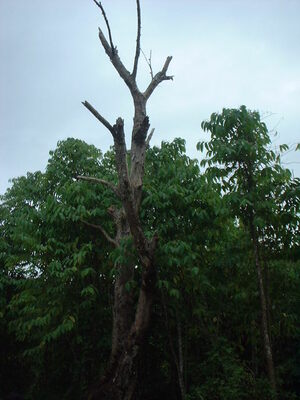
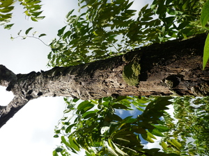

tungenu  
/tuŋɔnu/
n.
“dead_wood”
n.
dead wood in a tree that is still standing
Wrd.Gloss: dead_wood
Ka tungenu iyan ka kayu ne nabuyag e wey nahangu e ne warad e dewun. Ka minsan nekey ne klasi te kayu ne warad dewun wey dakel wey minsan kenè amana, egkaayunan te seini ne lalag basta su migsasindeg pad wey warè pad napeled.
Migpananeyik si Welu te tungenu ka egpanalukun te palees ne insahad te baled din ne impababa rin te kabil su egpewun-een diyè te baley rin.
Welu climb up to the dead tree chasing a lizard that he had caught with his trap and he let it to carry on its back his backpack and ordered to go home first.
cf. batang
cf. lepuk
Eng. dead wood; wood, dead; tree, dead; brittle wood
vi.
for a tree (egkatungenu, actor, egkA><ø-) to have died but still be standing
Ka egkatungenu iyan ka pegkahangu te kayu wey pegkapatey e.
Natungenu e ka balitì diyè te sapiling ney.
The baliti tree in our yard has died (but is still standing)
Eng. dead tree
Online dict status: -
Usage level: R
Updated by: RJH,AAA,TME,QDL,RJH
Last updated: 15/Jul/2013
This page last updated: 28-Dec-2019
Copyright © 2009-2014, Matigsalug Language Christian Association, Inc